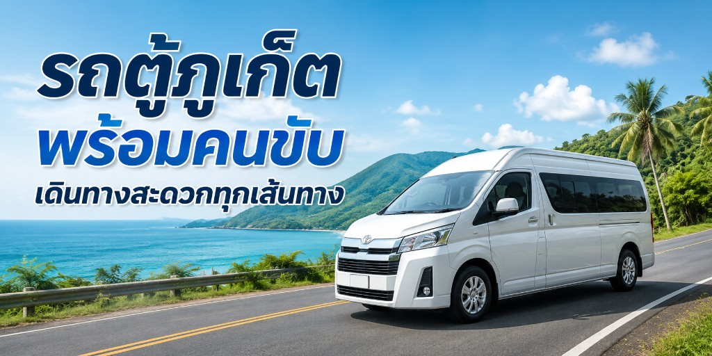

คู่มือรถตู้ภูเก็ต
จองรถตู้ภูเก็ตไป-กลับ วางแผนอย่างไร
วิธีจองรถตู้ภูเก็ตแบบไป-กลับ ทั้งรับส่งเที่ยวเดียวสองขา เหมาครึ่งวัน และเหมาเต็มวัน พร้อมเคสที่ควรแยกใบจอง

Infinity Transport Phuket — จองรถตู้ภูเก็ตไป-กลับ วางแผนอย่างไร
คำว่าไป-กลับของ รถตู้ภูเก็ต มีได้หลายแบบ บางงานคือสองเที่ยวรับส่งแยกขา บางงานคือเหมารถไว้ใช้ช่วงกลางวันแล้วกลับที่เดิม การเลือกผิดรูปแบบทำให้รถไม่อยู่ตอนที่ต้องการกลับ
บทความนี้อิงรูปแบบราคาเริ่มต้นบน หน้าราคา และเทียบกับ ครึ่งวันหรือเต็มวัน โดยไม่สร้างเรตรายทางใหม่
คำตอบสั้น: ถ้าไปจุดหนึ่งแล้วกลับในอีกหลายชั่วโมงโดยไม่ใช้รถระหว่างทาง มักจองสองเที่ยว ถ้าแวะหลายจุดหรือให้รถอยู่ด้วยในช่วงกลางวัน ดู Half Day เริ่มต้น 3,000 บาทต่อ 6 ชั่วโมง หรือ Full Day เริ่มต้น 4,500 บาทต่อ 10 ชั่วโมง
สารบัญ
1. ไป-กลับมีกี่แบบ
2. เมื่อไหร่จองสองเที่ยว
3. เมื่อไหร่เหมาครึ่งวันหรือเต็มวัน
4. ขาไปกับขากลับเวลาไม่เท่ากัน
5. เส้นข้ามจังหวัดและต่อเรือ
6. เช็คลิสต์ก่อนยืนยันแบบไป-กลับ
7. คำถามที่พบบ่อย
8. สรุปท้ายบทความ
9. ติดต่อเรา (CTA)
ไป-กลับมีกี่แบบ
| แบบ | เหมาะกับ | หมายเหตุ |
|---|
| สองเที่ยวรับส่ง | ไปจุดหมาย แล้วกลับคนละเวลาโดยไม่ใช้รถระหว่างทาง | แต่ละขาเป็นงานรับส่งจุดต่อจุด |
| เหมาครึ่งวัน | ใช้รถต่อเนื่องราว 6 ชั่วโมง | เริ่มต้น 3,000 บาท ตามหน้าราคา |
| เหมาเต็มวัน | ใช้รถต่อเนื่องราว 10 ชั่วโมง | เริ่มต้น 4,500 บาท ตามหน้าราคา |
| หลายจุดในวันเดียว | ย้ายโรงแรมหรือแวะหลายที่ | อาจไม่ใช่แค่ไป-กลับจุดเดียว ดู ย้ายโรงแรมหลายจุด |
ราคาเริ่มต้นบนหน้าระบุว่าปรับตามเส้นทางและเวลา ให้ยืนยันก่อนวันเดินทาง
เมื่อไหร่จองสองเที่ยว
ตัวอย่างที่มักเข้าท่า
- โรงแรมไปสนามบินตอนเช้า และสนามบินกลับโรงแรมอีกวัน
- ไปท่าเรือช่วงเช้า แล้วมีรถมารับกลับตอนเย็นโดยไม่ใช้รถทั้งวัน
- ไปประชุมช่วงสาย แล้วกลับโรงแรมหลังเลิก โดยรถไม่ต้องรอทั้งงาน
แต่ละขาควรมีเวลา จุดรับ และจุดส่งของตัวเอง Airport Transfer ในเกาะเริ่มต้น 1,000 บาทต่อเที่ยวตาม หน้าราคา แต่เส้นจริงอาจต่างกัน
เมื่อไหร่เหมาครึ่งวันหรือเต็มวัน
ถ้าต้องการให้รถอยู่ระหว่างขาไปและขากลับ เช่น เที่ยวหลายจุด พักกลางวันแล้วย้ายต่อ หรือรับแขกหลายช่วงในครึ่งวัน การเหมาชัดกว่าการจองสองเที่ยวแล้วหวังว่ารถคันเดิมจะว่าง
รายละเอียดแพ็กเกจเหมาดูที่ เหมารถตู้รายวัน และตารางเทียบที่ ครึ่งวันหรือเต็มวัน
ขาไปกับขากลับเวลาไม่เท่ากัน
ไป-กลับไม่จำเป็นต้องสมมาตร
- ขาไปเช้า ขากลับดึก: แจ้งทั้งสองเวลาในใบจองเดียวกันหรือแยกใบให้ชัด
- จำนวนคนขากลับน้อยลงหรือมากขึ้น: บอกแยกต่อขา
- จุดรับขากลับไม่ใช่จุดส่งขาไป: ใส่ชื่อสถานที่ใหม่ ไม่ใช้คำว่ากลับที่เดิมถ้าคนละประตู
ถ้าไฟลท์ขากลับเลื่อน แจ้งเฉพาะขาที่เปลี่ยน อย่าสมมติว่าทั้งใบเลื่อนตาม
เส้นข้ามจังหวัดและต่อเรือ
เส้นไปดอนสัก กระบี่ เขาสก หรือสุราษฎร์ ไม่ควรคิดจากเรทเที่ยวในเกาะสองเท่าโดยอัตโนมัติ ต้องขอราคาตามเส้นและเวลาจริง
ถ้าไปส่งท่าแล้วผู้โดยสารขึ้นเรือต่อ ขากลับอาจเป็นคนละวันหรือไม่มีขากลับของรถคันเดิม ระบุให้ชัดว่าต้องการแค่ขาไป หรือต้องการรับกลับด้วย
เช็คลิสต์ก่อนยืนยันแบบไป-กลับ
- รู้แล้วว่าต้องการสองเที่ยว หรือเหมาช่วงหนึ่ง
- มีเวลาขาไปและขากลับแยกกัน
- จุดรับ–ส่งแต่ละขาชัด
- จำนวนคนและกระเป๋าต่อขาถ้าไม่เหมือนกัน
- ไม่ใช้ราคาสองเท่าของเที่ยวในเกาะกับเส้นข้ามจังหวัดโดยไม่ถาม
- ได้คำยืนยันทั้งสองขาหรือช่วงเหมาแล้ว
สรุปท้ายบทความ
ไป-กลับของ รถตู้ภูเก็ต มีได้ทั้งสองเที่ยวรับส่งและแบบเหมาช่วงเวลา เลือกจากว่าต้องการใช้รถระหว่างทางหรือไม่ แล้วส่งเวลาและจุดของแต่ละขาให้ครบก่อนยืนยัน
ติดต่อเรา (CTA)
มีแผนไปและกลับชัดแล้ว หรือยังเหลือขากลับไม่นิ่งใช่ไหม
ส่งขาไป ขากลับ จุดรับ–ส่ง จำนวนคน และกระเป๋า ให้ Infinity Transport & Travel Phuket ช่วยเลือกแบบงาน
จองรถตู้ภูเก็ต
กลับไปหน้าบทความทั้งหมด
คำถามที่พบบ่อย (FAQ)
ไป-กลับคิดราคาสองเท่าของเที่ยวเดียวไหม
ในเกาะบางเคสใกล้เคียงการจองสองเที่ยว แต่ไม่ใช่สูตรตายตัวทุกเส้น เส้นไกลและเวลารอต้องคุยแยก
จองไป-กลับแล้วรถคันเดิมมารับกลับไหม
ไม่การันตีทุกงาน ขึ้นกับการจัดคิว ถ้าต้องการคันเดิมหรือคนขับเดิมให้บอกตอนจอง
ไปเช้ากลับเย็นควรเหมาวันหรือจองสองเที่ยว
ถ้าไม่ใช้รถระหว่างทาง สองเที่ยวมักพอ ถ้าแวะหลายจุดหรือให้รถรอ ดูครึ่งวันหรือเต็มวัน
ขากลับยังไม่รู้เวลาจองได้ไหม
จองขาไปก่อนได้ แต่ควรอัปเดตขากลับทันทีที่รู้เวลา โดยเฉพาะไฟลท์
ย้ายโรงแรมแล้วค่อยไปสนามบินนับเป็นไป-กลับไหม
เป็นแผนหลายจุด อาจไม่ใช่ไป-กลับจุดเดียว ส่งลำดับจุดให้ทีมงานจัดรูปแบบงาน
ยกเลิกขาเดียวหลังจองไป-กลับได้ไหม
ต้องคุยตามเงื่อนไขงานที่ยืนยันไว้ อย่าสมมติว่ายกเลิกขาเดียวโดยอัตโนมัติ